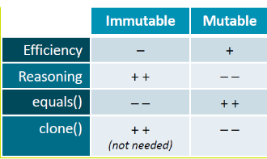
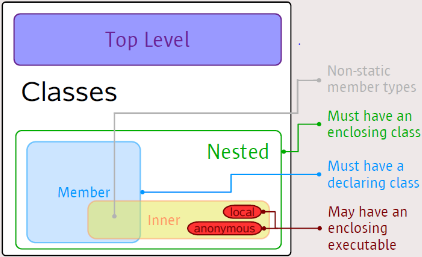
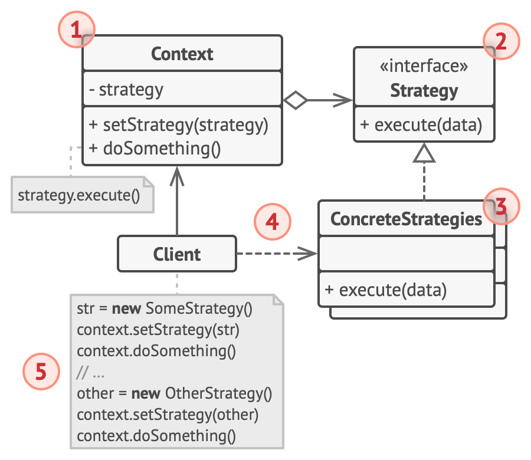
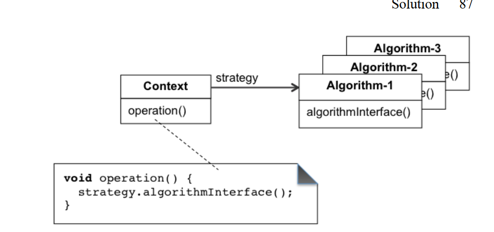
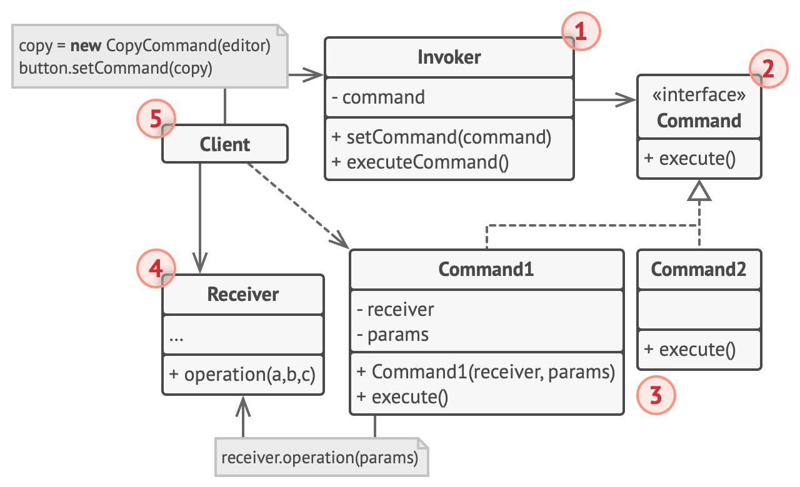
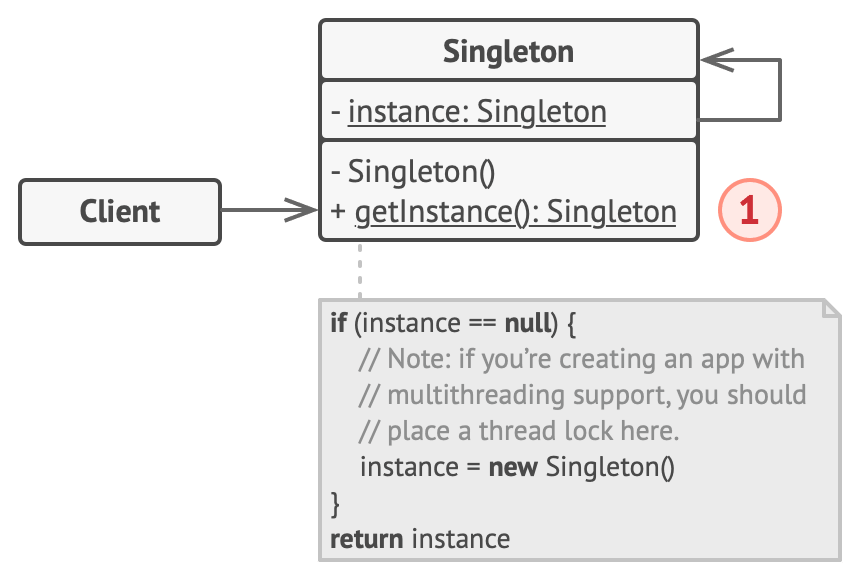
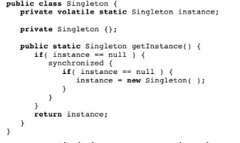
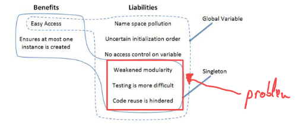

General points of attention
Features of OOP
- Inheritance
- Encapsulation
- Polymorphism
- creation of items that have similar behavior
- Method Overriding
- When a child class overrides a parent class’s method, the child class might offer an alternative implementation.
- Method Overloading
- Although two methods or functions may have the same name, the number of arguments given into the method call may vary.
- Dynamic dispatch
- process of selecting which implementation of a
polymorphic operation (method or function) to call at run time.
Modular programs
List of advantages:
- enable solution of more complex problems
- facilitate parallel construction by a team
- improves ability to plan work and track progress
- improves verifiability
- allows early release of design
- allows unit testing of separate components
- allows stepwise integration
- improves maintainability -> changes affect few components
- improves prosiblity for reuse
Encapsualtion
What is it?
- hiding the representation of data and implementation of operations
Why is it useful?
- it enables one to abstract from data, reduce dependencies and decrease coupling
- changes to implementation do not affect ussage occurences
ADT
What is it?
- a type whose specifiaction and usage abstracts from implementation details
- makes available a set of abstract values together with operations on those values
Why is it useful?
- implementation code of an ADT can be changed without affecting client code
- it limits the consequences of making changes to implementations
- makes it easier to have multiple implementations of the same ADT
How to implement it?
Code:
- a data representation (in terms of concrete types or other ADTS)
- Implementations of all operations
Documentation:
- representation invariant, stating the condition under which the data representation is valid (when it represents an abstract value)
abstraction function, mapping a data representation to the corresponding abstract value
Representation invariant (short: rep invariant) is condition to be satisfied by the instance variables, in order to make sense as a representation of an abstract value
Abstraction function maps each representation that satisfies the rep invariant to the represented abstract value. Can be implemented (in a way) in method String toString().
- implementation deals with the choice of data representation and method implementations
- data representation in terms of instance variables representing abstract values
- method implementation adhering to contract
- pre and postcondition must be reinterpreted in terms of the data representation, using AF.
- rep invariant as additional precondition, and additional
postcondition for commands
TDD
Steps
- Analyze requirements
- Slecet requirement to develop
- Specify class/methods informally: javadoc summary
- Specify formally: model with invariants, headers and contracts
- Implement rigorous tests, in unit test class
- Choose data rep and implement class methods
- Test implementation and fix defects
- Repeat
Why write test cases before implementing software?
- test cases help stabilize interfaces and contracts before implementing them
- changes in interfaces and contracts lead to changes in implementation -> it's better to have those properly done first
- encourages analysis of interfaces and contracts before implementing them -> you get familiar with the module's interface
- allows to focus on implementing the module and getting it to work without being interrupted by test case development
Robustness
A method is called robust when its behaviour under violated precondition is well-specified in its contracts
- With explicit signaling, it quickly becomes clear the problem is located outside the method
How to test for robustness?
- Call the method under test in a
try block so that precondition is violated
- If the next statement is reached (no exception thrown), the test
fails
- Catch exception thrown in a
catch block
- If expected exception was thrown, pass the test, fail otherwise
Exceptions
Why throw exceptions instead of returning a special value?
- if all values can be returned under normal circumstances, it would be impossible to return a special value
- client code needs to check for the special value even if it only wants to propagate the signal to a higher level
- programmer might forget to check the return value, whereas exepctions cannot be ignored easily
- exceptions can carry important additional information
- You cannot return an error code in a void method, but you can throw an exception
- Thrown exceptions in Java interrupt the regular control flow, whereas special return values do not
5 1/2 Major principles
SRP: Single Responsibility Principle
- each functin should solve a single well-defined problem
OCP: Open Closed Principle
- modules should be open for extension. Inheritance allows reuse of implementation:
- representation
- operartion definitions
- can add variables/methods and override methods without modifying the superclass.
- modules shoud be closed for modification (
private or at least protected)
LSP: Liskov Substitution Principle
- U a subclass of T; U is a
subtype of T, when in each place where an obj of type T can be used, you can substitute an object of type U, without affecting correctness of the program.
ISP: Interface Segregation Principle
- when designing a class for several clients with different needs, rather than loading the class with all methods that clients need -> create specific interfaces for each kind of client
- make each client depedent on 'its' interface and implement all interfaces of class
DIP: Dependency Inversion Principle
- if module A depends on module B:
- A cannot be compiled/used without B
- This hinders testing and reuse of A
- High level modules should not depend upon low-level modules. Both should depend upon
abstractions
- Abstractions should not depend upon details -> details should depend upon abstractions
DRY: Don't Repeat Yourself
- be dry like a well-done steak
Mutable vs Immutable classes
- a class T is
immutable when none of its methods modifies this or a parameter of type T (the state of the T object cannot change after construction)
- it is
mutable otherwise
Advantages:
- immutable objects help with reasoning and do not require cloning
Disadvantages:
- less effiecient as you constantly need new objects (filling up memory)

Nested classes
These come in 4 kinds:
- static member class (top-level class)
- non-static member class
- names local classes
- anonymous class
The latter 3 are called inner classes. An inner class has access to the member of its outer classes
Inner classes
Advantages:
- keep things close together (logical grouping)
- encapsulation (decrease coupling)
- improved readability and maintainability of source code
Disadvantages:
- outer class becomes less readable
- anonymous classes: cannot define own constructor, can introduce extra methods

Generic classes
- a class whose definition involves one or more type parameters
- the paremeters abstract from concrete types, making the class more generally (re)usable
- improve type safety (compared to using
Object as a concrete type)
SwingWorker
Purpose
- Acts as a Facade for the Java Thread facilities.
- Makes it easy to run code in a background thread without blocking the main GUI thread.
The main steps
Static aspect, declaration. By subclassing SwingWorker and overriding the doInBackground() and done() methodsDynamic aspect, execution. The resulting SwingWorker subclass must be instantiated for each run. The background thread is activated by calling execute().
Template Method:
- methods
execute(), publish() and get() are template methods, holding the "common" code
- overridable methods such as
doInBackground(), process(), done() are hook methods.
Facade:
- Swingworker provides a simplified interface for the Java thread library
Miscellaneous
- A class C depends on a class D if class C cannot be compiled without having class D
- Disadvantages:
Hinders verifiability: C is harder to test because it must be used with D. That may be slow and expensive.Hinders maintainability: when class D changes, one has to recompile and test class C as wellHinder reuse: when reusing class C, you must reuse class D as well
- How to avoid such dependencies?
- Apply the
Dependency Inversion Principle: Don't make a class C depend on a concrete class D, rather make them both depend on an abstraction
-
- Introduce an interface for class D
-
- Let class D implement that interface
-
- Make class C dependent on that interface
-
- Let client of class C configure it at runtime to use class D (
Dependendcy Injection)
Design Patterns
Benefits:
- Facilitate
reuse
- Design patterns enable design reuse
- This means looking for a routine design before resorting to the creation of an original design
- Make
design easier
- Applying a pattern is easier than solving design problems from first principles
- Capture
expertise and facilitate its dissemination
- Knowledge of DPs helps in becoming better at designing
- Define a
shared vocabulary for discussing design and architecture
- Necessary for communication
- Improve
ability to do original design
- Lead to solid understanding of fundamental design concepts and principles
- Makes it easier to
learn class libraries using DPS
- DPs are common in libraries, so it's easier to get familiar with them
Intent
- solves the problem of how to traverse the elements of a collection
- keeping client code loosely coupled from the collection object and traversal algorithm
Solution
Iterator<E>
- holds the state of one specific iteration over E
- cannot be reused after the iteration terminates (i.e. when
hasNext() returns false)
Iterable<E>
- represents a collection over E that can be iterated with a for-each statement
- can be reused for multiple iterations
- works via its
iterator() Factory Method that returns an Iterator<E>

- The Iterator interface declares the operations required for traversing a collection: fetching the next element, retrieving the current position, restarting iteration, etc.
- Concrete Iterators implement specific algorithms for traversing a collection. The iterator object should track the traversal progress on its own. This allows several iterators to traverse the same collection independently of each other.
- The Collection interface declares one or multiple methods for getting iterators compatible with the collection. Note that the return type of the methods must be declared as the iterator interface so that the concrete collections can return various kinds of iterators.
- Concrete Collections return new instances of a particular concrete iterator class each time the client requests one.
- The Client works with both collections and iterators via their interfaces. This way the client isn’t coupled to concrete classes, allowing you to use various collections and iterators with the same client code.
Typically, clients don’t create iterators on their own, but instead get them from collections. Yet, in certain cases, the client can create one directly; for example, when the client defines its own special iterator.
Discussion
Pros
Single Responsibility Principle. You can clean up the client code and the collections by extracting bulky traversal algorithms into separate classes.Open/Closed Principle. You can implement new types of collections and iterators and pass them to existing code without breaking anything.- You can iterate over the same collection in parallel because each iterator object contains its own iteration state.
Cons
- Overhead if the app only works with simple collections
- Using an iterator may be less efficient than going through elements of some specialized collections directly.
- You can use
Factory Method along with Iterator to let collection subclasses return different types of iterators that are compatible with the collections.
- the
createIterator() is a Factory Method
Introduction
- sometimes desirable to postpone algorithm selection until runtime
- the choice of algorithm might depend on factors not available at design time: nature of input, source of input, user preferences, etc.
- Components that postpone selection until runtime → good candidates for Strategy design patte
Intent
- Strategy defines a family of algorithms, encapsulating each one and makes them interchangeable
- Context can be modified without affecting the algorithms.
- Context isn’t responsible for selecting an appropriate algorithm -> the client passes the desired strategy to the context
- Context works with all strategies through the same generic interface with a single method
execute()
- New algorithms can be added or existing ones modified without altering the context
Solution

- The Context maintains a reference to one of the concrete strategies and communicates with this object only via the strategy interface.
- The Strategy interface is common to all concrete strategies. It declares a method the context uses to execute a strategy.
- Concrete Strategies implement different variations of an algorithm the context uses.
- The context calls the execution method on the linked strategy object each time it needs to run the algorithm. The context doesn’t know what type of strategy it works with or how the algorithm is executed.
- The Client creates a specific strategy object and passes it to the context. The context exposes a setter which lets clients replace the strategy associated with the context at runtime.
Discussion
Anti-pattern

In the anti-pattern of this DP, client/context declares and uses a variable of each concrete algorithm. This way the client/context depends on (cannot be compiled without) the concrete strategy classes.
Pros
- You can swap algorithms used inside an object at runtime.
- You can isolate the implementation details of an algorithm from the code that uses it.
- You can replace inheritance with composition.
Open/Closed Principle. You can introduce new strategies without having to change the context.Dependency Inversion Principle. The client / context code and the concrete algorithm classes both depend on the abstract strategy interface -> the dependency has been inverted.
Cons
- Clients must be aware of the differences between strategies to be able to select a proper one
Mitigate this by having the context configure default strategy objects if no strategy is chosen
- Creates useless overhead if you only have a couple of algorithms that rarely change
Intent
Observer is a behavioral design pattern that lets you define a subscription mechanism to notify multiple objects about any events that happen to the object they’re observing.
It defines a one-to-many relation between:
- Subject object (publisher)
- Any number of observers (subscribers)
Solution
Simply, the mechanism consists of:
- an array field for storing a list of references to subscriber objects
- several public methods which allow adding subscribers to and removing them from that list.

- The
Publisher issues events of interest to other objects. These events occur when the publisher changes its state or executes some behaviors. Publishers contain a subscription infrastructure that lets new subscribers join and current subscribers leave the list.
- When a new event happens, the publisher goes over the subscription list and calls the notification method declared in the subscriber interface on each subscriber object.
- The
Subscriber interface declares the notification interface. In most cases, it consists of a single update method. The method may have several parameters that let the publisher pass some event details along with the update.
- Concrete
Subscribers perform some actions in response to notifications issued by the publisher. All of these classes must implement the same interface so the publisher isn’t coupled to concrete classes.
- Usually, subscribers need some contextual information to handle the update correctly. For this reason, publishers often pass some context data as arguments of the notification method. The publisher can pass itself as an argument, letting subscriber fetch any required data directly.
- The
Client creates publisher and subscriber objects separately and then registers subscribers for publisher updates.
Discussion
The update method in the Observer interface could inclde a reference to the Subject as seen below:
interface Observer {
void update(Subject subject, Data data);
}
This is useful because an observer may be observing multiple subjects. The subject parameter identifies the object which has been updated, and can be used to pull more data from it.
Pros
Open/Closed Principle. You can introduce new subscriber classes without having to change the publisher’s code (and vice versa if there’s a publisher interface).- You can establish relations between objects at runtime.
Cons
- performance penalty because of all data transfers
- have to decide on how to transfer data:
- push to Observers
- Subject decides what data to push
- in most cases the pushed data is not needed and might affect performance
- notify Observers + pull from Subject
- observers decide on what data to pull
- might increase performance since only needed data is pulled
- Subject has to implement methods for data retrieval
Introduction
Command is a behavioral design pattern that turns a request into a stand-alone object that contains all information about the request. This transformation lets you pass requests as a method arguments, delay or queue a request’s execution, and support undoable operations.
- command object encapsulates one/more operations on one/more components
- when the user presses a button, teh button sends a message to a command objects, the command object calls actions on components
Intent
- Encapsulate a request as an object + decouples the request from clients invoking the request
- Encapsulating a request as an object allows executable code to be passed around and treated like any other object
- Commands become a convenient middle layer that reduces coupling between the GUI and business logic layers
- command objects implement the same abstract interface, so any button can be made to work with any command object

Structure

Summary:
- Command Pattern encapsulates a request
- Request is comprised of one/more operations being invoked on one/more existing receiver objects
- Invoker: initiate requests encapsulated in commands
- Command: an abstract interface allows concrete commands to be loosely coupled to clients
- ConcreteCommand: calls operations on receiver objects in order to carry out the encapsulated request
- Receiver: represents existing functionality
- The Sender class (aka invoker) is responsible for initiating requests. This class must have a field for storing a reference to a command object. The sender triggers that command instead of sending the request directly to the receiver. Note that the sender isn’t responsible for creating the command object. Usually, it gets a pre-created command from the client via the constructor.
- The Command interface usually declares just a single method for executing the command.
- Concrete Commands implement various kinds of requests. A concrete command isn’t supposed to perform the work on its own, but rather to pass the call to one of the business logic objects. However, for the sake of simplifying the code, these classes can be merged.
Parameters required to execute a method on a receiving object can be declared as fields in the concrete command. You can make command objects immutable by only allowing the initialization of these fields via the constructor.
- The Receiver class contains some business logic. Almost any object may act as a receiver. Most commands only handle the details of how a request is passed to the receiver, while the receiver itself does the actual work.
- The Client creates and configures concrete command objects. The client must pass all of the request parameters, including a receiver instance, into the command’s constructor. After that, the resulting command may be associated with one or multiple sender
Discussion
Applicability
- Use the Command pattern when you want to parametrize objects with operations
- Use the Command pattern when you want to queue operations, schedule their execution, or execute them remotely
- Use the Command pattern when you want to implement reversible operations.
Pros
Single Responsibility Principle. You can decouple classes that invoke operations from classes that perform these operations.Open/Closed Principle. You can introduce new commands into the app without breaking existing client code.Dependency inversion. Invoker depends only on abstract commands (!= concrete commands)- You can implement undo/redo.
- You can implement deferred execution of operations
- You can assemble a set of simple commands into a complex one. -> composite
Cons
- The code may become more complicated since you’re introducing a whole new layer between senders and receivers.
- Multi-level Undo is more complicated
Singleton is a creational design pattern that lets you ensure that a class has only one instance, while providing a global access point to this instance.
Intent
Singleton solves two problems, vilating the Single Responsibility Principle:
- Ensures that a class has just a single instance
- Provide a global access point to that instance
Solution
- Make the default constructor private, to prevent other objects from using the new operator with the Singleton class.
- Create a static creation method that acts as a constructor. Under the hood, this method calls the private constructor to create an object and saves it in a static field. All following calls to this method return the cached object.
Structure

- The Singleton class declares the static method getInstance that returns the same instance of its own class.
The Singleton’s constructor should be hidden from the client code. Calling the getInstance method should be the only way of getting the Singleton object.
When it comes to multithreaded programs you should use double-checked locking sync.

Discussion

Applicability
- Use the Singleton pattern when a class in your program should have just a single instance available to all clients
- Use the Singleton pattern when you need stricter control over global variables
Pros
- You can be sure that a class has only a single instance
- You gain a global access point to that instance.
- The singleton object is initialized only when it’s requested for the first time.
Cons
- Violates the
Single Responsibility Principle. The pattern solves two problems at the time.
- The pattern requires special treatment in a multithreaded environment so that multiple threads won’t create a singleton object several times
- It may be difficult to unit test the client code of the Singleton because many test frameworks rely on inheritance when producing mock objects.
- Introduce hidden dependencies -> weaken modularity
- can be used with Abstract Factory -> guaranteed at most 1 factory calss is created
- can be used with State -> avoid recreating state classes when state switches
Decorator is a structural design pattern that lets you attach new behaviors to objects by placing these objects inside special wrapper objects that contain the behaviors.
It is about modifying behaviour while preserving interface
Problem
Extend the behaviour of an existence class with inheritance:
- Inheritance is static. You can’t alter the behavior of an existing object at runtime. You can only replace the whole object with another one that’s created from a different subclass
- creates
compile-time structural relationships
- protected interface of base class is exposed to subcalsses -> weakens the encapusaltion
- performs poorly when different combinations of features are created (see below)

Intent
- provides an alternative to class inheritance for extending the behaviour of existing classes
- uses
object composition
- lightweight flexible approach to adding responsibilities to objects at runtime
- useful for adding different combinations and permutations of features
Solution
- use
Aggregation or Composition
- Aggregation: object A contains objects B; B can live without A
- Composition: object A consists of objects B; A manages life cycle of B; B can't live w/out A
Structure

- The Component declares the common interface for both wrappers and wrapped objects.
- Concrete Component is a class of objects being wrapped. It defines the basic behavior, which can be altered by decorators.
- The Base Decorator class has a field for referencing a wrapped object. The field’s type should be declared as the component interface so it can contain both concrete components and decorators. The base decorator delegates all operations to the wrapped object.
- Concrete Decorators define extra behaviors that can be added to components dynamically. Concrete decorators override methods of the base decorator and execute their behavior either before or after calling the parent method.
- The Client can wrap components in multiple layers of decorators, as long as it works with all objects via the component interface.
Discussion
Applicability
- when you need to be able to assign extra behaviors to objects at runtime without breaking the code that uses these objects.
- when it’s awkward or not possible to extend an object’s behavior using inheritance
Pros
Single Responsibility Principle. You can divide a monolithic class that implements many possible variants of behavior into several smaller classes.- You can extend an object’s behavior without making a new subclass.
- You can add or remove responsibilities from an object at runtime.
- You can combine several behaviors by wrapping an object into multiple decorators.
Cons
- It’s hard to remove a specific wrapper from the wrappers stack.
- It’s hard to implement a decorator in such a way that its behavior doesn’t depend on the order in the decorators stack.
- sers must contend with a large number of small classes even for routine tasks
Decorator and Adapter delegate requests to a wrapped object
- Decorator adds new behaviour without changing the interface
- Adapter keeps the same basic behaviour, but changes the interface
Composite and Decorator have similar structure diagrams since both rely on recursive composition to organize an open-ended number of objects.Decorator lets you change the skin of an object, while Strategy lets you change the guts (lmao)